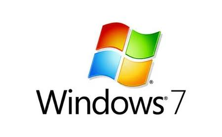
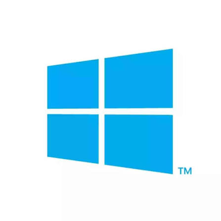

Microsoft Windows es el sistema operativo más utilizado del mundo en computadoras de escritorio y laptops, funcionando como el intermediario principal entre el usuario y la máquina para administrar tanto los componentes físicos como los programas. A través de su interfaz gráfica, permite interactuar con la computadora mediante elementos visuales como ventanas, íconos y menús, lo que elimina la necesidad de escribir comandos complejos. Entre sus funciones clave destaca la gestión automática de hardware como procesadores, impresoras y unidades de almacenamiento, además de ofrecer una administración eficiente de archivos en carpetas y la capacidad de ejecutar múltiples tareas en simultáneo. Lanzado originalmente por Microsoft en 1985, el sistema ha evolucionado a través de versiones icónicas como Windows XP y Windows 7 hasta llegar a los actuales Windows 10 y Windows 11, los cuales están diseñados con un fuerte enfoque en la seguridad, el trabajo híbrido y la integración en la nube.

